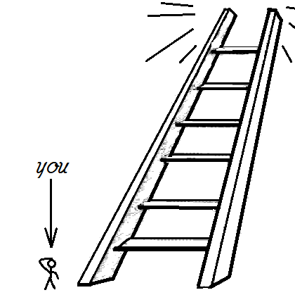

RED model
- R: Recognize assumptions
- E: Evaluate arguments
- D: Draw conclusions
When we consider the various frameworks for critical thinking, a few that come to mind are:
A way of investigating an issue from a variety of perspectives but in a clear, conflict-free way.
But the model that we’ll be focusing on is called the Ladder of Inference.

The Ladder of Inference is a psychology model that helps explain how we make decisions based on our individual assumptions. It consists of seven steps or rungs that connect the data we observe to the conclusions we draw.
The Ladder of Inference can lead to false beliefs and actions if we rush through it without critical thinking. Slowing down and consciously navigating each step helps us make better decisions.
Start by observing reality. This is the raw data you encounter through your senses.
From the observed reality, you selectively choose certain data points to focus on. Not everything you observe makes it to the next step.
Assign meaning to the selected data. Interpretation involves making sense of what you’ve observed.
Based on your interpretation, you form assumptions. These assumptions may come from past experiences or cultural norms.
Assumptions converge to form conclusions. These conclusions guide your beliefs and subsequent actions.
Conclusions solidify into beliefs. These are deeply held convictions about the situation.
Beliefs drive your actions. Your behavior is influenced by what you believe to be true.
Scenario: A staff member consistently arrives late.
Scenario: Sam helps in chat but hasn’t replied to your email for two days.
Match responses to steps. Drag, or use ↑ and ↓.